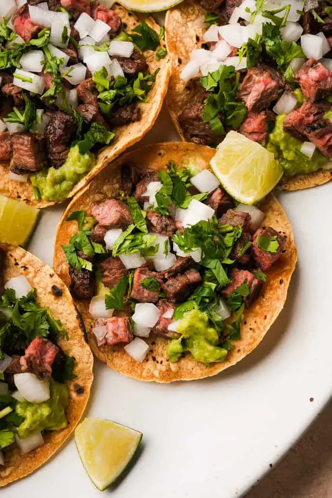

Tacos

Why Carne Asada Tacos and Not Chicken?
Their are many tacos to pick from the world. The biggest decision factor is the meat inside the tacos. Which is why my favorite is carne asada with el pastor right behing it!
The recipe is very simple!
Ingredients
- 2 tablespoons reduced sodium soy sauce
- tablespoons freshly squeezed lime juice
- 2 tablespoons canola oil, divided
- cloves garlic, minced
- teaspoons chili powder
- 1 teaspoon ground cumin
- teaspoon dried oregano
- ½ pounds skirt steak, cut into 1/2-inch pieces
- 12 mini flour tortillas, warmed
- ¾ cup diced red onion
- ½ cup chopped fresh cilantro leaves
- 1 lime, cut into wedges
Instructions
- In a medium bowl, combine soy sauce, lime juice, 1 tablespoon canola oil, garlic, chili powder, cumin and oregano.
- In a gallon size Ziploc bag or large bowl, combine soy sauce mixture and steak; marinate for at least 1 hour up to 4 hours, turning the bag occasionally.
- Heat remaining 1 tablespoon canola oil in a large skillet over medium high heat. Add steak and marinade, and cook, stirring often, until steak has browned and marinade has reduced, about 5-6 minutes, or until desired doneness.
- Serve steak in tortillas, topped with onion, cilantro and lime.